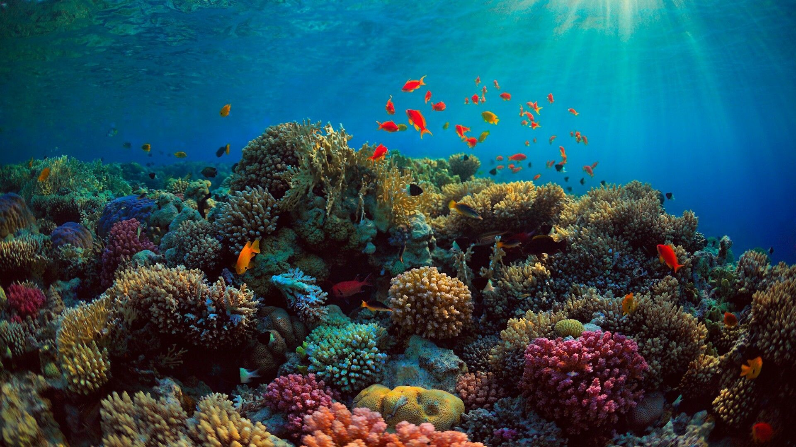

Sponges live on the marine ocean floor. They are usually found in marine water, but some species live in freshwater. Some common predators are turtles, fish, and slugs. Coral reefs are places where sponges are commonly found.
Characteristics:
Sponges are called filter feeders. They filter plankton from the water through a complex process. Osculum
Porifera's new development were specialized cells.